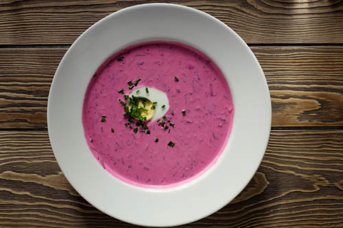

35 Best Sweet Potato Soup Recipes That'll Outshine
No Turkey Day feast would be would be complete without the usual side dishes—mashed potatoes, green bean casserole, and cranberry sauce. But why not take your Thanksgiving menu up a notch and add something more original to the usual table spread? That’s where these sweet potato soup recipes come in, which will pair delightfully with the main entrée—the turkey, of course—and is bound to satisfy all your friends and family members. This enticing trimming, which can also kick off the holiday festivities as a savory appetizer, comes in all kinds of blended varieties to curb even the pickiest of palates. Keep things creamy (and cozy!) with a basic roasted rendition made from scratch. Or, the chunkier the better—toss in ingredients like lentils, rice, butternut squash, pumpkin, and more to up the filling factor. No matter your dinner style, guests will love everything from spicy sweet potato soup to sweet potato corn chowder. Plus, while you attend to the bird in the oven, you can let your slow cooker do the legwork with a handful of these easy recipes. Best of all? When you’re stuck with more leftovers than you know what to do with, these concoctions will stay fresh and flavorful for days after Thanksgiving.
buy